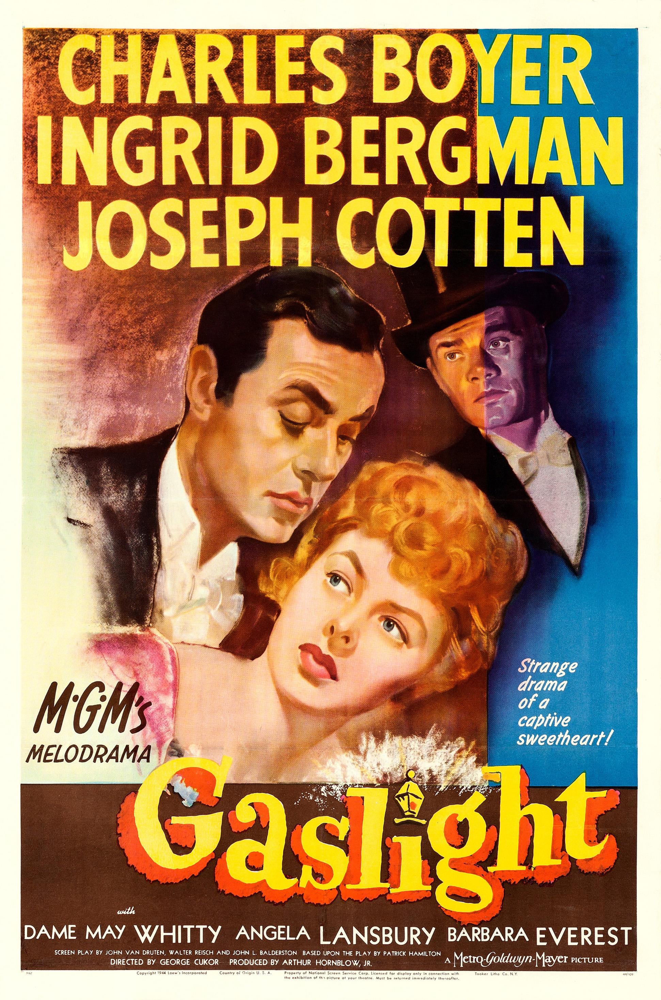

Gaslight
17th Academy Awards
(Oscars 1945)
7 Nominations, 2 Awards
| Nominations | ||
|---|---|---|
| Category | Nominees | Result |
| Best Motion Picture | Metro-Goldwyn-Mayer | Nominated |
| Actor | Charles Boyer | Nominated |
| Actress | Ingrid Bergman | Won |
| Actress in a Supporting Role | Angela Lansbury | Nominated |
| Writing (Screenplay) | John L. Balderston, John Van Druten, and Walter Reisch | Nominated |
| Cinematography (Black-and-White) | Joseph Ruttenberg | Nominated |
| Art Direction (Black-and-White) | Cedric Gibbons, Edwin B. Willis, Paul Huldschinsky, and William Ferrari | Won |